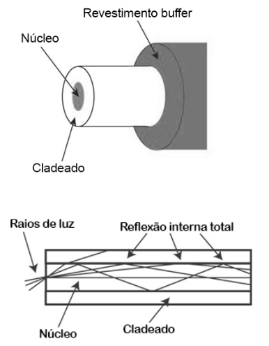
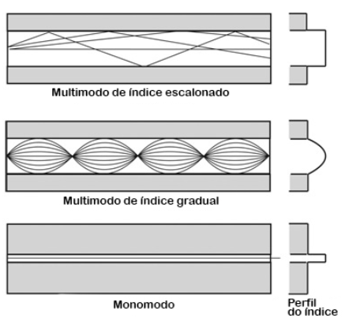
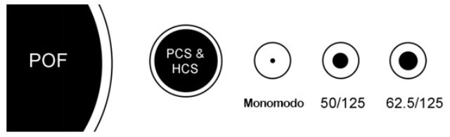
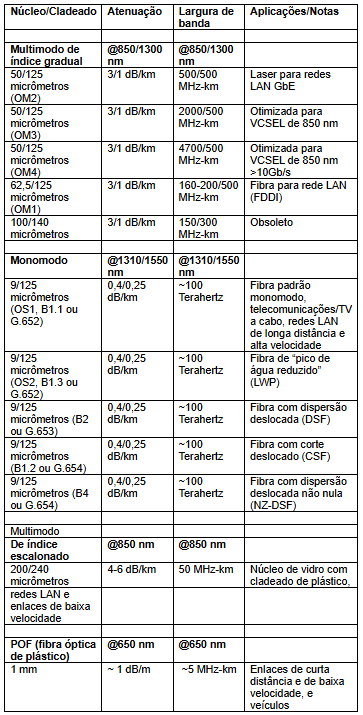
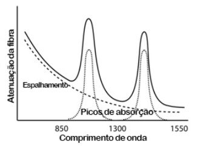
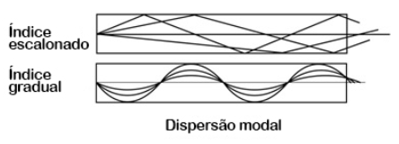
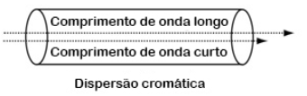

◉ Parâmetros de desempenho do cabeamento óptico e testes de campo
Transmissão por fibra óptica
Conheça os dois tipos da tecnologia mais veloz e estável da atualidade
Navegar pela internet, fazer uploads/downloads e transmitir grandes volumes de dados com velocidade
e estabilidade é uma necessidade para o usuário comum e para empresas de diversas áreas.
Hoje, a fibra óptica é o material mais usado para garantir o aumento de capacidade de tráfego de voz,
vídeo e dados de alta velocidade, devido ao nível elevado de fiabilidade que garante seu desempenho.
Esses filamentos extremamente finos são capazes de transportar dados, por meio de sinal luminoso,
por longas distâncias, com as vantagens da baixa possibilidade de interferência.
A transmissão de dados pode ser feita por dois tipos de fibra óptica: monomodo (SM) ou multimodo (MM).
A principal diferença entre os dois tipos é a direção para a qual o sinal é transmitido. No caso da
fibra monomodo, a luz percorre um único caminho pelo núcleo interno para ir de um lado ao outro.
Enquanto na fibra multimodo a luz se propaga por vários caminhos.
A fibra monomodo pode ter de 1.310 ou 1.550 nanômetros de comprimento de onda, o que representa
maior desempenho do que a fibra multimodo, que tem comprimento de onde de 850 nanômetros.
Conhecer qual tipo de fibra óptica será usado é indispensável para garantir a segurança de toda
a infraestrutura existente.
➤ Principais matérias-primas da fibra óptica
– Plástico reflexivo
– Sílica pura ou dopada
– Vidro composto
➤ Características do núcleo da fibra óptica
Monomodo – o núcleo desse tipo de fibra óptica é mais estreito e mede entre 8 a 10
micrômetros, que também se caracteriza pela casca de reflexão mais espessa.
Multimodo – tipo de fibra com núcleo que mede cerca de 62,5 micrômetros.
Importante: ambas têm casca de 125 micrômetros, ou seja, mesmo diâmetro final.
➤ Como cada tipo funciona?
➤ Monomodo
Alcance: limitado a 4 km para cabeamento estruturado.
A fibra do tipo monomodo permite que a luz trafegue dentro do núcleo por um único
caminho, sem reflexão, o que permite o alcance a longas distâncias.
Uma grande vantagem do seu uso é alcançar maior banda passante por ter menor
dispersão, oferecendo maior qualidade de sinal e menor interferência nos dados
transmitidos.
O custo da fibra monomodo é mais elevado. Um dos motivos é que sua fonte de luz
para geração de sinal são os Diodos Laser, que possuem um desempenho superior
ao LED, mas com preço mais alto.
Outro ponto que eleva o custo é a dificuldade de manuseio em caso de emendas,
que exige muita técnica para alinhar as fibras. Contudo, para distâncias maiores
é uma ótima opção pois há mais facilidade de instalação, o que compensa o preço
mais elevado.
➤ Multimodo
Alcance: 2 km, no máximo, em cabeamento estruturado.
A fibra multimodo tem limite máximo menor que o da fibra monomodo, além de taxas de
transmissão mais baixas.
Como o núcleo é bem maior, quando comparado ao monomodo, a luz tem mais espaço
para passar pela fibra, se propagando de modo menos linear, portanto, em diversas
direções. Assim, mais de um feixe de luz pode ser enviado ao mesmo tempo.
É importante ressaltar que diâmetros grandes facilitam o acoplamento de fontes
luminosas e requerem pouca precisão nos conectores.
Esse tipo de fibra normalmente usa fontes de luz com menor intensidade, como os
Diodos Emissores de Luz (LED), que têm custos menores.
O tipo multimodo pode ser classificado ainda a partir do seu índice de refração,
que pode ser degrau ou gradual.
➤ Qual tipo escolher?
A escolha do tipo de fibra óptica depende de fatores como a distância a ser percorrida
pelos dados transmitidos e a função a ser desempenhada.
A fibra monomodo é indicada para comunicação de longa distância, pois alcança vários
quilômetros sem grandes variações de sinal e transmite grande quantidade de dados.
Sua aplicação é ideal para projetos de segurança eletrônica, por exemplo, em que a
câmera é instalada em locais por vezes distantes da sala de monitoramento.
A fibra multimodo é a mais comum para redes internas, pois o sinal transmitido
para curtas distâncias consegue manter a qualidade.
Seu funcionamento garante transmitir dados de fontes múltiplas, onde vários
dispositivos realizam troca de pacotes simultaneamente.
Esse tipo de fibra é o mais aplicado em residências, backbone de edifícios
comerciais e cabeamento horizontal.
➤ O que analisar na hora de escolher?
Nomenclaturas:
CFOAC = cabos de fibra óptica por acesso;
X = tipo de fibra óptica;
Z = quantidade das fibras;
K = o nível de proteção em casos de incêndio.
➤ Fibras reconhecidas pela norma NBR 14565:
Monomodo – OM1, OM2, OM3 e OM4
Multimodo – OS1 e OS2
A fibra óptica é o meio de comunicação que funciona enviando sinais ópticos (de luz)
através de fios finos de fibra de vidro extremamente puro ou de plástico. A luz é “guiada”
através do centro da fibra, que é chamado “núcleo”. O núcleo está rodeado por um material
óptico chamado “cladeado” que captura a luz no núcleo utilizando una técnica óptica chamada
“reflexão interna total”. A fibra é coberta por um revestimento buffer que a protege da umidade
e de danos físicos. O revestimento buffer é a cobertura retirada da fibra para realizar uma
terminação ou uma emenda.

O núcleo e o cladeado usualmente são realizados com vidro extremamente puro, embora algumas fibras
sejam totalmente de plástico, ou com um núcleo de vidro e cladeado de plástico. O núcleo foi
projetado para ter um maior índice de refração que o cladeado, um parâmetro óptico que mede a
velocidade da luz no material. A refração de menor índice do cladeado faz com que os raios de
luz sejam curvados conforme passam do núcleo para o cladeado, o que causa uma “reflexão interna
total” que captura a luz no núcleo até um determinado ângulo, o que define a “abertura numérica”
da fibra.
A fibra de vidro é coberta por um revestimento plástico chamado “revestimento buffer primário” que
a protege da umidade e de danos físicos. E o “cabo” fornece mais proteção às fibras e aos elementos
de resistência através de uma cobertura de proteção exterior chamada “jaqueta”.
➤ Fabricação da fibra óptica
A fabricação da fibra óptica com precisão submícron é um processo interessante que consiste em
fabricar vidro extremamente puro e esticá-lo até formar fios do tamanho de um cabelo humano.
O processo começa com a fabricação de uma pré-forma, uma vareta de vidro de grande diâmetro que
tem exatamente a mesma seção transversal que uma fibra, mas que é centenas de vezes maior.
A extremidade da vareta é aquecida, e um fio fino de fibra é esticado desde a pré-forma e é
enrolado em grandes bobinas. Depois da fabricação, a fibra é testada e transformada em cabo.
➤ Tipos de fibra
➤ Tipos multimodo e monomodo
Os dois tipos básicos de fibra são multimodo e monomodo. Dentro dessas categorias, as fibras são
identificadas de acordo com os diâmetros do núcleo e do cladeado expressos em micrômetros
(a milionésima parte de um metro), por exemplo, 50/125 micrômetros para a fibra multimodo.
A maioria das fibras tem 125 micrômetros de diâmetro exterior – um micrômetro é a milionésima
parte de um metro e 125 micrômetros equivalem a 0,005 polegadas – apenas um pouco maior que um
cabelo humano.
A fibra multimodo possui um núcleo através do qual viajam raios de luz em muitas direções,
chamadas modos. O núcleo é maior (geralmente de 50 ou 62,5 micrômetros) e suporta a transmissão
de múltiplos modos (raios) de luz. A fibra multimodo geralmente é utilizada com fontes LED em
comprimentos de onda de 850 e 1300 nm (ver abaixo) para redes de área local (LAN) mais lentas
e com fontes laser a 850 nm (VCSEL) e 1310 nm (laser Fabry-Perrot) para redes que operam a
velocidades de gigabits por segundo ou mais altas.
A fibra monomodo possui um núcleo muito menor, de apenas 8 ou 9 micrômetros, portanto a luz viaja
somente em um raio (modo). É utilizada para telefonia e TV a cabo com fontes laser de 1310 a 1550 nm,
já que tem perda mais baixa e uma largura de banda virtualmente infinita.
A fibra óptica de plástico (POF) possui um grande núcleo (aproximadamente de 1 mm), usualmente é de
índice escalonado e pode ser utilizada para redes de distância curta e de baixa velocidade.
As fibras PCS/HCS (de sílica com revestimento de plástico ou resistente, cladeado de plástico sobre
núcleo de vidro) possuem um núcleo de vidro menor (cerca de 200 micrômetros) e um cladeado de
plástico fino.

As fibras multimodo de índice escalonado foram as primeiras criadas. O núcleo da fibra multimodo de
índice escalonado é feito com um tipo de material óptico e o cladeado com outro tipo, com
características ópticas diferentes. Nela, a atenuação é mais alta e é muito lenta para muitos usos,
devido à dispersão causada pelas diferentes distâncias percorridas pelos variados modos no núcleo.
A fibra de índice escalonado não é muito utilizada – apenas as POF e as PCS/HCS (de sílica com
revestimento de plástico ou resistente, cladeado de plástico sobre núcleo de vidro) utilizam o
design de índice escalonado hoje. A POF é utilizada principalmente para enlaces de áudio e TV
para o consumidor final.
As fibras multimodo de índice gradual utilizam variações na composição do vidro no núcleo para
compensar as diferentes distâncias percorridas pelos modos. Elas oferecem uma largura de banda
centenas de vezes maior que a da fibra de índice escalonado, de até aproximadamente 2 gigahertz.
São utilizadas as de dois tipos, de 50/25 e de 62,5/125, onde os números representam os diâmetros
do núcleo/cladeado em micrômetros. A fibra multimodo de índice gradual é utilizada principalmente
para redes no interior, LAN, fibra até a estação de trabalho, CCTV e para outros sistemas de
segurança.
O núcleo da fibra monomodo é tão pequeno que a luz pode viajar apenas em um raio, o que aumenta a
largura de banda até quase o infinito, mas está praticamente limitada a 100.000 gigahertz, que ainda
é muito! O diâmetro do núcleo da fibra monomodo é de 8-10 micrômetros, e é conhecido como “diâmetro
do campo modal”, o tamanho efetivo do núcleo e um cladeado de 125 micrômetros de diâmetro. A fibra
monomodo é utilizada para redes no exterior como as redes de telecomunicações, FTTH, TV a cabo,
municipais e enlaces de dados de longa distância como as de gerenciamento de serviços públicos.
Alguns backbones de redes LAN de alta velocidade, usualmente em um campus, utilizam fibras
monomodo.
Foram desenvolvidas fibras especializadas para aplicações que exigem especificações únicas de
desempenho da fibra. Tanto as fibras multimodo quanto as monomodo insensíveis a curvaturas são
utilizadas para patch cords e para fibras contidas em compartimentos apertados. As fibras monomodo
dopadas com érbio são utilizadas em amplificadores ópticos, dispositivos utilizados em redes de
distâncias extremamente longas para regenerar sinais. As fibras são otimizadas para largura de banda
em comprimentos de onda apropriados para sistemas DWDM ou para reverter a dispersão cromática.
Esta é uma área de desenvolvimento de fibra que está muito ativa.
➤ Tipos e tamanhos de fibra
Encontramos fibra de dois tipos básicos: monomodo e multimodo. Exceto pelas fibras utilizadas para
aplicações especializadas, a fibra monomodo pode ser considerada de um único tamanho e tipo. Nas
redes de telecomunicações de longa distância ou nos cabos submarinos, o trabalho normalmente é feito
com fibras monomodo especializadas.

As fibras multimodo eram fabricadas originalmente em diferentes tamanhos, e eram otimizadas para
várias redes e fontes, mas, em meados dos anos 80, a indústria de dados padronizou o núcleo em 62,5
(a fibra de 62,5/125 tem um núcleo de 62,5 micrômetros e um cladeado de 125 micrômetros).
Atualmente, é chamada fibra padrão OM1. Há pouco tempo, como as redes gigabit e 10 gigabit
começaram a ser amplamente utilizadas, voltou a ser usado um design de fibra antigo. A fibra
de 50/125 era utilizada nos finais dos anos 70 para instalações de telecomunicações com laser,
até que foi disponibilizada a fibra monomodo. Essa fibra de 50/125 (padrão OM2) oferece maior
capacidade de largura de banda com as fontes laser utilizadas em redes LAN gigabit e permite
que os enlaces gigabit percorram maiores distâncias. A mais recente fibra de 50/125 otimizada
para laser ou OM3 é considerada pela maioria como a melhor escolha para instalações multimodo.
As fibras de índice escalonado mais comuns são fibras ópticas de plástico que geralmente têm 1 mm
de diâmetro. As fibras de sílica revestida com plástico ou com revestimento resistente têm um
cladeado de plástico sobre um núcleo de vidro de geralmente 250 micrômetros de diâmetro com um
núcleo de 200 micrômetros.
➤ Tipos de fibra e especificações típicas

OM* de acordo com a TIA (Associação das Indústrias de Telecomunicações); B* de acordo com a IEC
(Comissão Eletrotécnica Internacional); G* de acordo com a ITU (União Internacional de
Telecomunicações).
➤ Misturar diferentes tipos de fibras
Não é possível misturar e fazer coincidir diferentes tipos de fibra. A diferença nos núcleos das
fibras pode causar perdas elevadas ao transmitir de uma fibra com um núcleo maior para uma fibra
com um núcleo menor. Ao transmitir de uma fibra com um núcleo menor para uma fibra com um núcleo
maior não haverá perdas devido às incompatibilidades entre as fibras, já que fibra transmissora
tem menor tamanho que a fibra receptora. Tentar conectar uma fibra monomodo com uma multimodo pode
causar uma perda de 20 dB, o que equivale a 99% da potência. Até mesmo as conexões entre fibras de
62,5/125 e 50/125 podem causar uma perda significativa de 3 dB.
➤ Especificações da fibra
As especificações usuais são: tamanho (diâmetros de núcleo/cladeado em micrômetros), coeficiente de
atenuação (dB/km nos comprimentos de onda apropriados) e largura de banda (MHz-km) para fibras
multimodo; e dispersão cromática e dispersão de modo de polarização para fibras monomodo. A pesar
de que os fabricantes levam em conta outras especificações para o projeto e a fabricação da fibra
de acordo com os padrões do setor, como a abertura numérica (o ângulo de aceitação de luz da
fibra), a ovalidade (quão redonda é a fibra), e a concentricidade do núcleo e do cladeado, etc.
, esses aspectos geralmente não afetam os usuários que precisam comprar ou instalar fibras
específicas.
➤ Atenuação
A especificação principal da fibra óptica é a atenuação, que significa uma perda de potência óptica.
A atenuação de uma fibra óptica é expressa pelo coeficiente de atenuação, que é definido como a
perda na fibra por unidade de comprimento (em dB/km). A atenuação da fibra varia significativamente
se acordo com o comprimento de onda da luz.

A atenuação da fibra óptica é o resultado de dois fatores: absorção e espalhamento. A primeira é
causada pelas moléculas no vidro que absorvem a luz e a convertem em calor. Os principais agentes
de absorção são os OH+ residuais e os dopantes utilizados para modificar o índice de refração do
vidro. Tal absorção ocorre em comprimentos de onda diferentes, determinados pelos elementos que
absorvem a luz. A absorção de OH+ é predominante e ocorre com mais força em 1000 nm, 1400 nm e
acima de 1600 nm.
A maior causa da atenuação é o espalhamento. O espalhamento ocorre quando a luz colide com átomos
individuais no vidro e é anisotrópico. A luz que é espalhada em ângulos fora da abertura numérica
da fibra será absorvida no cladeado ou retornada à fonte. O espalhamento também e uma função do
comprimento de onda, inversamente proporcional ao comprimento de onda da luz elevada à quarta
potência. Portanto, ao duplicar o comprimento de onda da luz, as perdas por espalhamento são
reduzidas pela metade em relação à quarta potência ou 16 vezes.
Por exemplo, a perda da fibra multimodo é muito mais alta a 850 nm (chamada comprimento de onda
curto), de 3 dB/km, enquanto a 1300 nm (chamada comprimento de onda longo) é de apenas 1 dB/km.
Isto significa que a 850 nm, a metade da luz é perdida em 1 km, enquanto a 1300 nm a perda é de
apenas 20%.
Portanto, para transmissões de longa distância é conveniente utilizar o maior comprimento de onda
possível para ter mínima atenuação e máxima distância entre os repetidores. Juntos, a absorção e
o espalhamento produzem a curva de atenuação de uma fibra típica de vidro, tal como mostrado acima.
Os sistemas de fibra óptica transmitem nas “janelas” criadas entre as bandas de absorção a 850 nm,
1300 nm e 1550 nm, nas quais a física também permite fabricar lasers e detectores facilmente. A
fibra de plástico tem um comprimento de onda limitado, o que restringe o uso prático a fontes LED
de 660 nm.
A atenuação das fibras multimodo de índice gradual também depende de como é transmitida a luz através
da fibra, o que é chamado distribuição de potência modal. A largura de banda também é afetada pela
distribuição de potência modal, por isso, a seguir são analisados os efeitos modais na fibra
multimodo.
➤ Largura de banda
A capacidade de transmissão de informações da fibra multimodo é limitada por dois componentes
diferentes da dispersão: modal e cromática. A dispersão modal ocorre pelo fato de que o perfil
do índice da fibra multimodo não é perfeito. O perfil de índice gradual teoricamente permite que
todos os modos tenham a mesma velocidade de grupo ou velocidade de trânsito ao longo da fibra.
Quando a parte exterior do núcleo tem um índice de refração menor que o da parte central do núcleo,
os modos de ordem superior aumentam sua velocidade à medida que se afastam do centro do núcleo,
para compensar assim as maiores distâncias percorridas.

Em uma fibra ideal, todos os modos deveriam ter a mesma velocidade de grupo e não deveria existir
a dispersão modal, mas na realidade, o perfil do índice é uma aproximação por partes e os modos não
são todos transmitidos perfeitamente, o que permite a existência de dispersão modal. Devido a que
os modos de ordem superior têm maiores desvios, a dispersão modal de uma fibra (e, portanto, sua
largura de banda laser) tende a ser muito sensível ao condicionamento modal na fibra. A largura
de banda de uma fibra em particular é proporcional ao comprimento da fibra, já que a dispersão
ocorre ao longo de toda a fibra. No entanto, a largura de banda de fibras mais longas é degradada
de forma não linear, já que os modos de ordem superior são atenuados com mais força. A seguir se
encontra uma análise dos efeitos da distribuição de potência modal.

O segundo fator que incide na largura de banda da fibra é a dispersão cromática, que afeta tanto a
fibra multimodo quanto a monomodo. É importante lembrar que um prisma espalha o espectro de luz
incidente, devido a que a luz viaja a diferentes velocidades de acordo com a sua cor e é refratada
em ângulos diferentes. O índice de refração do vidro depende do comprimento onda, portanto, uma
fibra com perfil de índice gradual fabricada cuidadosamente pode ser otimizada para apenas um único
comprimento de onda, usualmente perto de 1300 nm, e a luz de outras cores sofrerá dispersão
cromática. Até a luz no mesmo modo será dispersa se tiver diferentes comprimentos de onda.
A dispersão cromática é um grande problema com fontes LED na fibra multimodo, porque têm uma saída
espectral ampla, a diferença dos lasers que concentram a maior parte da luz em uma faixa espectral
estreita. Os sistemas como o FDDI, que são baseados em LED emissores de superfície de saída
espectral ampla, sofrem tal intensidade de dispersão cromática que a transmissão é limitada a apenas
2 km de fibra de 62,5/125.
A dispersão cromática também afeta enlaces longos em sistemas monomodo, mesmo com lasers, é por
isso que a fibra e as fontes são otimizadas para minimizar a dispersão cromática em enlaces de
longa distância.
Como os sistemas monomodo se tornaram mais rápidos e de maior distância, outro fator de dispersão
ganhou importância, a dispersão de modo de polarização (PMD). A PMD ocorre pelas diferenças de
velocidade na propagação da luz polarizada na fibra. É difícil testar a PMD, porque é sensível à
tensão física aplicada sobre o cabo, podendo mudar, por exemplo, nos casos em que a velocidade
do vento afeta os cabos aéreos. Também é complicado testar a PMD com os métodos que utilizam os
diferentes fabricantes de equipamento de testes.
➤ Efeito de dispersão modal na fibra multimodo
Nas fibras multimodo, alguns raios de luz viajam direto pelo eixo da fibra, enquanto todos os
outros oscilam ou rebotam para frente e para trás dentro do núcleo. Nas fibras de índice escalonado,
os raios que viajam fora do eixo, chamados “modos de ordem superior” rebotam para frente e para
trás desde os limites do núcleo/cladeado, conforme são transmitidos através da fibra. Como esses
modos de ordem superior viajam em distâncias maiores que os raios axiais, são responsáveis pela
dispersão modal que limita a largura de banda da fibra.
Na fibra de índice gradual, a redução do índice de refração do núcleo à medida que se aproxima do
cladeado faz com que os modos de ordem superior sigam um caminho curvo que é mais longo que o do
raio axial (o “modo de ordem zero”), mas em virtude do menor índice de refração longe do eixo,
a luz aumenta sua velocidade conforme se aproxima do cladeado e precisa aproximadamente o mesmo
tempo para viajar ao longo da fibra. Portanto, a “dispersão” ou as variações no tempo de trânsito
dos diferentes modos é minimizada, e a largura de banda da fibra é maximizada.
No entanto, o fato de que os modos de ordem superior viajem mais longe no núcleo de vidro faz com
que eles tenham mais possibilidades de sofrer espalhamento ou absorção, as duas primeiras causas
de atenuação da fibra óptica. É assim que os modos de ordem superior vão sofrer uma atenuação maior
que os modos de ordem inferior, e uma seção comprida de fibra totalmente cheia (todos os modos são
lançados com o mesmo nível de potência) terá menor quantidade de potência nos modos de ordem
superior da que teria a mesma fibra em uma distância menor.
Esta mudança da “distribuição modal” entre fibras de índice gradual curtas e longas é descrita como
“perda transitória” e pode causar grandes diferenças nas medições de atenuação realizadas na fibra.
Ela não apenas muda a distribuição modal, mas também muda o diâmetro efetivo do núcleo e a abertura
numérica. O termo “distribuição dos modos em equilíbrio” (EMD) descreve a distribuição de modos
em uma fibra longa que perdeu a maioria dos modos de ordem superior. Uma fibra “longa” tem uma
EMD, enquanto uma fibra “curta” tem a todos seus modos de ordem superior inicialmente lançados.
➤ Efeito de dispersão modal nas medições de perdas
Ao medir a atenuação de uma fibra longa de índice gradual multimodo em EMD (ou com condições de
lançamento de EMD simulada) e compará-la com a de uma fibra normal em “condições de lançamento
sobrecarregado” (isto é, que a fonte enche todos os modos por igual), será possível perceber que
a diferença é de aproximadamente 1 dB/km, e esse valor é denominado “perda transitória”. Portanto,
a medição da fibra em EMD fornece uma atenuação de 1 dB por km menos que as condições de
sobrecarregamento. Os fabricantes de fibra utilizam o tipo de medição com EMD porque é mais
reproduzível e representa as perdas esperadas em seções compridas de fibras. Alguns padrões
exigem o uso de um coeficiente de atenuação mais alto para calcular a perda de uma rede de cabos
do que o coeficiente de atenuação testado da maioria das fibras, porque os cabos são muito mais
curtos que os comprimentos da EMD.
Da mesma maneira, ao testar cabos com conectores, a medição da perda dependerá da distribuição da
potência modal na fibra. Uma medição de EMD pode dar resultados otimistas, já que efetivamente
representa uma situação onde é feito um lançamento a partir de uma fibra de um diâmetro menor
e abertura numérica menor que a fibra de recepção, o que produz uma perda do conector mais baixa.
A diferença na perda do conector causada por condições de lançamento modal pode ser enorme.
Utilizando o mesmo par de conectores é possível medir vários décimos de um dB a mais com um
lançamento totalmente cheio que com um lançamento simulado com EMD.
A maioria dos padrões para cabos com fibra multimodo exige algum método de controle da distribuição
da potência modal. Os fabricantes utilizam métodos sofisticados que analisam a potência de saída
da fonte de teste acoplada a um cabo de referência. Alguns métodos de teste de campo mais práticos
exigem uma especificação na saída da fonte seguida de um de mandril de enrolamento. Esse assunto
será coberto mais detalhadamente no capítulo sobre testes.
➤ Efeito de dispersão modal na largura de banda
A fibra multimodo de índice gradual foi criada para melhorar a largura de banda da fibra. As camadas
de vidro de índice de refração decrescente afastadas do centro do núcleo guiam a luz por caminhos
sinusoidais onde a luz viaja mais rápido à medida que se afasta do centro do núcleo. O perfil do
índice da fibra deve fornecer compensação para os modos de ordem superior, mas isso é imperfeito.
Quando a distribuição modal da fibra está limitada a perto do centro do núcleo, como no caso das
fontes laser, a largura de banda da fibra efetivamente se torna maior.
A largura de banda da maioria das fibras vem sendo testada na fábrica utilizando uma fonte de teste
que sobrecarrega a fibra, isto é, que todos os modos transportam luz. Pesquisas recentes em fibras
otimizadas para laser desenvolveram novos métodos de teste, seja limitando a sobrecarga da fibra
ou utilizando métodos de dispersão que analisam os modos separadamente.